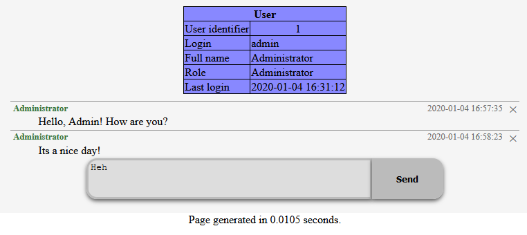

ActivityComment module
Module name: activitycomment
You have to enable this module in site/_modules.php file to use it.
This module gives you the possibility to enable user comments on every object wihch has an unique identifier.

ActivityComment API
register_comment_container($containername)
Registers a comment container in the system which is a simple string without spaces and any special characters.
(Defines a separate sql table for the comments located in this container)
You have to call this function to use comment system, so it's practical to put this in an init hook.
(See example below)
Note: Registering more comment containers makes the possibility to spread the data into more sql tables.
Note2: After enable the comment container you must visit the sql scheme editor page to satisfy the schema requirements of the module.
get_comment_block($container,$refid)
Generates a comment block for an object which has unique id which works into the parameter passed comment container.
It returns the html codes of the comment block contains the comments and the new comment form. It generates ajax based
controls to add and delete comments.
Permissions of commenting
You have to define the comment_access hook to controls who can comment in the system.
The hook receives the following parameters:
$container- The comment container name$refid- The unique id of the object where the comment put.$op- "view" or "add"$account- The user object who intend to do the operation
You have to return one of the following values from your hook:
ACTIVITYCOMMENT_ACCESS_ALLOWACTIVITYCOMMENT_ACCESS_DENYACTIVITYCOMMENT_ACCESS_IGNORE
Sample code
Enable comments on every user object for every authenticated users:
function hook_mymodule_init()
{
register_comment_container('user');
}
//Set who can comment
function hook_mymodule_comment_access($cont,$ref,$op,$acc)
{
if($acc->auth)
return ACTIVITYCOMMENT_ACCESS_ALLOW;
return ACTIVITYCOMMENT_ACCESS_DENY;
}
//Makes the comment block visible after user page
function hook_mymodule_node_form_after($node,$op)
{
ob_start();
if($node->node_type == 'user' && $op != 'add')
print get_comment_block('user',$node->node_nid);
return ob_get_clean();
}
Let's see how to make the authenticated users can comment the CodKep pages. (Page node)
function hook_mymodule_init()
{
register_comment_container('pagecomm');
}
//Set who can comment
function hook_mymodule_comment_access($cont,$ref,$op,$acc)
{
if($acc->auth)
return ACTIVITYCOMMENT_ACCESS_ALLOW;
return ACTIVITYCOMMENT_ACCESS_DENY;
}
//Makes the comment block visible when view a page
function hook_mymodule_pageview_after($pagenode)
{
ob_start();
print get_comment_block('pagecomm',$pagenode->node_nid);
return ob_get_clean();
}
Settings
The ActivityHook module have some settings which can set in site settings.
| name | default | description |
|---|---|---|
$site_config->comment_delete_own_until_sec | 60*60 | Specifies how many seconds the user can delete own comments. |
$site_config->acitvity_comment_block_css_class | "commentblk_default_style" | It specifies the top level css class of the comment block. All default css rules depends on this class name so you can write completely different styles by redefine this string. |
$site_config->acitvity_comment_renderer_callback | "codkep_render_commentblock" | The callback name of the comment renderer function. You can use your own renderer by change this variable. |